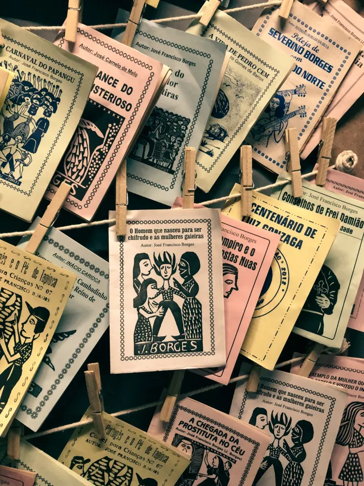

Leandro Gomes de Barros
Paraibano, considerado o criador do cordel. Foi o primeiro autor e editor do país a viver só de folhetos, com tipografia própria no Recife. Drummond o chamou de "príncipe dos poetas".
Cultura
A Paraíba revelou grandes nomes das artes plásticas, da poesia popular e da música, com projeção nacional e internacional. TODO: completar a abertura.
Toca aí
Escolha um artista e dê o play. O som vem do Spotify oficial de cada um.

Poesia que se pendura no barbante
Os folhetos ficavam expostos em barbantes, os cordéis, nas feiras do Nordeste, e os poetas eram chamados de "poetas de bancada". Em 2018, o Iphan reconheceu a literatura de cordel como Patrimônio Cultural Imaterial do Brasil, e a Paraíba também a declarou patrimônio do estado por lei.
Paraibano, considerado o criador do cordel. Foi o primeiro autor e editor do país a viver só de folhetos, com tipografia própria no Recife. Drummond o chamou de "príncipe dos poetas".
Autor do Romance do Pavão Misterioso, publicado pela primeira vez em 1923 e um dos folhetos mais famosos do Brasil.
TODO: falar das capas em xilogravura, da cantoria e dos cordelistas de hoje.
1843–1905 · Areia
O maior pintor acadêmico brasileiro do século XIX. Autor de obras históricas monumentais como Independência ou Morte (O Grito do Ipiranga) e A Batalha do Avaí. Em Areia, a casa onde nasceu virou museu.
Saiba maisnascido em 1944 · João Pessoa
Pintor, gravurista e desenhista, um dos nomes mais influentes da arte contemporânea brasileira, com séries marcadas pela figura humana e pela crítica social.
Saiba maisnascido em 1965 · João Pessoa
Artista visual e professor, conhecido por instalações que investigam memória, arquivos e história.
Saiba mais1919–1982 · Alagoa Grande
O "Rei do Ritmo": samba, forró e coco. Sucessos como Sebastiana.
1930–2006
Maestro, arranjador e mestre da sanfona, levou a música nordestina e o choro para palcos do mundo.
Conceição
Uma das maiores intérpretes da música nordestina, do forró à MPB.
Brejo do Cruz
Uniu cordel, rock e poesia mística nordestina (Avôhai, Chão de Giz).
Catolé do Rocha
Cantor, compositor e escritor da MPB contemporânea (Mama África).
João Pessoa
Líder, guitarrista e principal compositor dos Paralamas do Sucesso.
dupla de compositores
Centenas de sucessos do forró tradicional, gravados por grandes vozes do país.
Monteiro
Voz do forró pé de serra. TODO: confirmar e completar.
O nome vem da linha de ônibus 401, que levava os músicos por João Pessoa. O som mistura baião, funk, rock e samba, com crônicas sobre a vida na cidade. Mais de 15 anos de estrada e presença confirmada no Lollapalooza Brasil 2027.
Ouvir no SpotifyMúsica na rua, no Centro Histórico: aos sábados, a partir das 12h30, na Praça Rio Branco. Chorinho, samba, xote e forró tradicional, promovido pela Fundação Cultural de João Pessoa (Funjope).
TODO: confirmar se continua gratuito e o título de patrimônio imaterial.
TODO (pesquisar e confirmar): espaços como a Usina Cultural Energisa e a Vila do Porto, no Centro Histórico, e bandas da nova geração.